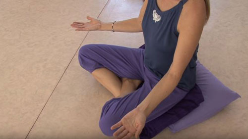
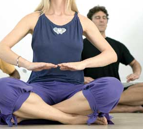

Nadabrahma Meditation
Nadabrahma Meditation is an ancient Tibetan practice where humming sounds and hand movements bring harmony between the body and mind. It's designed to connect you with your inner self through sound and vibration, resulting in a profound sense of balance and tranquility.
To practice this meditation: Download the audio and listen to it while following the steps below.
1. Preparation
Find a quiet and comfortable place to meditate. Sit in a relaxed posture with your spine straight, hands resting on your lap. Close your eyes and take a few deep breaths to relax.

2. Step 1: Humming (30 minutes)
Start humming a sound, like "mmm" or "aaa", loud enough to create a vibration in your body. Let the sound resonate within you. A point will come when the humming continues on its own, and you simply listen to the vibrations.
3. Step 2: Hand Movements (15 minutes)
3.1 First Half (7.5 minutes): Giving Energy
For the first 7.5 minutes, move your hands outward, palms facing up, in slow circular motions. Begin the motion at the navel, then extend your hands outward as if you are giving energy to the universe. Keep your movements gentle and slow.
3.2 Second Half (7.5 minutes): Receiving Energy
For the next 7.5 minutes, reverse the motion by turning your palms downward and slowly bringing your hands back toward the body. Visualize receiving energy from the universe, focusing on the sensation of energy flowing into your body.
4. Step 3: Relaxation (15 minutes)
In the final stage, stop all movements and sit still. Observe the energy and vibrations within you as you enjoy a deep state of relaxation and inner harmony.